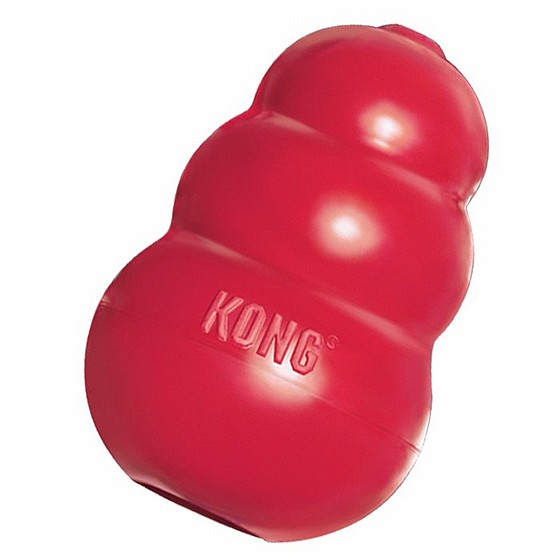

.gif)


הכנות בבית לקבלת הגור
גור קטן לועס כמעט כל דבר שנקרא בדרכו לכן מומלץ להקפיד על בית מסודר ככל שניתן, לא לאפשר לגור גישה לחפצים קטנים שהגור עלול לבלוע וכן לדאוג שכל כבלי החשמל לא יהיו נגישים עבורו.
בנוסף, צריך לוודא שהפחים סגורים או בתוך ארון סגור. שטיחים יש לגלגל לחודשיים הראשונים כדי שהגור לא יעשה עליהם צרכים וגם כדי שלא ילעס אותם.
היכרות עם הבית
עד עתה בילה הגור יחד עם אימו וגורים נוספים בסביבה מוגנת ומוגבלת לאזור מצומצם יחסית.
המעבר לביתכם הוא אירוע מאתגר ומעט מלחיץ עבור הגור החדש. הניחו לו לחקור את סביבת המגורים החדשה שלו בחופשיות תוך שאתם מלווים אותו ומונעים ממנו להיקלע לצרות.
כמו תינוק שמתחיל לזחול הגור החדש ייעזר בפיו להכרת הסביבה. עליכם לעזור לו ללמוד את גבולות המותר והאסור. במידה והוא לוקח חפץ אסור או מסוכן עבורו, תפסו אותו בקולר ואמרו בסמכותיות את הפקודה "לא". קחו ממנו את החפץ ותנו לו מיד אח"כ צעצוע מתאים שיעסיק אותו.
חשוב לא לשכוח לשבח את הכלב , "יופי כלב טוב", כאשר הוא משחק בצעצוע שלו. בדקו האם החדר בטוח עבור הגור - חפצים קטנים העשויים להיבלע ולסכן את הגור. יש להקפיד למנוע גישה לחומרי ניקוי ורעלים אחרים.
חשוב שהבית שלכם יהפוך כעת למקום מוגן ואוהב עבור הגור, מקום ממנו הוא יוכל לצאת ולחקור את העולם הגדול סביבו.
חשוב! אין להשאיר את הגור לבדו ללא השגחה.
צעצועים ולמה הם חשובים
הגור מבלה שעות רבות בבית בחוסר מעש. שעות רבות מתוכן יבלה הגור עימכם בשינה שלווה, במיוחד במידה והוא מקבל גירוי פיסי ומנטאלי מספק בפעילות משותפת איתכם. גור חסר מעש אשר ימצא עצמו משועמם וללא השגחה יפנה לפעילות מתגמלת מאוד (מבחינתו) - לעיסה.
הלעיסה היא פעולה טבעית לגור, בייחוד בתקופות בהן שיניו צומחות. במידה ולא נכוון את הלעיסה לצעצוע מתאים ימצא הגור חלופות אחרות מחפצי הבית. לדוגמה - חפצים יקרי ערך, רהיטים, נעליים, משקפי קריאה, שלט הטלוויזיה ועוד.
מעבר לשעמום, הגור לועס מתוך רצון להתנסות ממש כמו תינוק. כמו כן התנהגות של לעיסה עשויה לסייע לכלב להתמודד עם לחצים והקלה על כאבי שיניים. על מנת לענות על הצורך של הגור ללעוס, רצוי לייעד לגור צעצוע מתאים. ניתן לאלתר בבית צעצועים וניתן כמובן לקנות בחנות.
צעצועים אסורים:
- הימנעו מלתת לגור חפצים אישיים שלכם למשחק. הנעליים הישנות שלכם אינן מתאימות. זכרו שבפעם הבאה הוא יבחר בחדשות.
- כדורים. אין לשחק עם כדורים בכדי לא לעודד את יצר הרדיפה של הגור. זה יפריע לעבודתו בעתיד!!
- צעצועים שמתפרקים לחלקים קטנים עשויים גם הם לסכן את הכלב. גם עצם לעיסה יכולה להגיע לגודל בו היא הופכת לחפץ שיבלע ויגרום נזק לכלב. צעצוע שהתפרק - זרקו לפח.
ככל שתקפידו לשחק נכון עם הגור, בזמנים שאתם בוחרים ולא כאשר הגור דורש ממכם שני הצדדים יצאו נשכרים.
כלוב
הכלוב ילווה את הגור עד לגיל 5 חודשים בערך או עד הגיל שבו הוא יראה יכולת לשהות מחוץ לכלוב ללא נזקים כאשר הוא ללא השגחה. ההחלטה על תהליך גמילה מהכלוב יעשה יחד עם המדריכים.
מטרות השימוש בכלוב:
- ללמד את הגור להתאפק: יצר טבעי של גורים הוא לא לעשות צרכים במקום שהם ישנים. בזמן שהגור בכלוב הוא ילמד להתאפק מספר שעות (לפי הגיל).
- למזער יצר הריסה: לגורים יש נטייה לכרסם דברים, כך הם מגלים את העולם. בעצם זה שאנחנו מונעים מהם את הגישה לכל חפצי הבית ושמים להם בכלוב צעצועים שאנחנו מרשים להם לכרסם - הגור לומד שאלו הצעצועים שלו ואותם מותר לו לכרסם. כמו כן בזמן שעמום, הוא ילך לישון ולא יחפש דברים אחרים לכרסם.
- הכלוב גם מונע מקרים בהם הגור ילעס משהו שיסכן את בריאותו. לדוגמה - תרופות אנושיות.
- הכלוב מהר מאוד הופך למעין "מאורה" של הגור ובכך לגור יש מקום בטוח שבו הוא יאהב לרבוץ.
איך להרגיל את הגור לכלוב?
- מומלץ שהכלוב יהיה ממוקם בחדר השינה או במקום מרכזי אחר בבית.
- תהליך ההסתגלות לכלוב הוא הדרגתי וצריך לקחת זאת בחשבון.
- מומלץ לתת לגור את הארוחות שלו בתוך הכלוב וליצור לו סביבה נעימה עם צעצועים.
- וודאו שיש משטח נעים ורך עבור הגור לרבוץ עליו בתוך הכלוב. בעונת הקיץ – לשים לב לא להשתמש בשמיכות צמר או פליז.
מה עושים עם בכי בלילה בכלוב?
לאחר ששמתם את הגור בכלוב - אם אחרי 20 דק׳ רצופות הגור עדיין בוכה ניתן להוציא לצרכים.
אם אחרי זה הוא שוב בוכה ניתן לפתוח את הכלוב כדי שיוכל לישון על הרצפה אבל לא להסתובב. קישרו אותו עם השרשרת לסורג הכלוב או לרהיט כבד (לדוגמה - מיטה).
תהיו עקביים ונחושים בהרגלה לכלוב. בהתחלה אנחנו יודעים שזה קשה, זה ישתלם לכם!
מתי אפשר לגמול את הגור מהכלוב?
כמו כל עניין התנהגותי, קודם כל יש להתייעץ עם המדריכים לפני שמתחילים בתהליך הגמילה.
במידה ואתם מרגישים שאתם יכולים לסמוך על הגור שלכם והוא לא הורס דברים כאשר הוא משוחרר בבית בזמן שאתם נמצאים, ניתן להתחיל תהליך גמילה מהכלוב.
בהתחלה, בלילה, נשאיר את דלת הכלוב פתוחה (אם הכלוב בחדר מומלץ לסגור את דלת חדר השינה).
בהמשך, כאשר נצא מהבית, נשאיר את הכלוב פתוח ונעזוב לפרקי זמן קצרים: 10 דק', 15 דק', 20 דק' ונעלה
בהדרגה. במידה והגור הרס משהו - נחזור מיד להשתמש בכלוב או בנקודת קשירה.
לבסוף, במידה והגור נשאר לבד בבית משוחרר ולא הורס כלום , נוכל להחזיר את הכלוב למרכז ולארגן לגור מיטה.
תעסוקה בזמנים שלא מאפשרים לצאת מהבית (חם/גשום מאוד)
- קונג: להרטיב גרגירים עם מים חמים ולתת להם להתרכך. לאחר שהתרככו למלא את הקונג בגרגרים המרוככים ולהכניס לכמה שעות (ניתן להקפיא גם כמה ימים מראש).

- למלא בלון במים ומספר גרגירים ולהקפיא: אחרי שזה קפא, לגזור את הבלון ולתת לגור את גוש הקרח)כדאי בתוך הקערה).
- תרגול פקודות משמעת (שב , ארצה ,הישאר, אליי): חשוב להקפיד להגיד את הפקודה פעם אחת בלבד.
- משחק מחשבה: חפש את הצעצוע
המטרה: ללמד את הגור להשתמש באף שלו כדי לחפש משהו. זה משחק שמאוד מעייף אותם, שכן 60% מהמוח שלהם מנווט על ידי חוש הריח!
תחילה דואגים לזה שאין צעצועים מפוזרים בכלל.
שלב ראשון ברמה קלה - ללמד את הגור את הפקודה "חפש"
אומרים לגור "הישאר", הולכים כמה צעדים אחורה, שמים צעצוע שהכלב מאוד אוהב!! מול העיניים שלו וחוזרים אליו. ברגע שחוזרים אל הגור אומרים לו " חופשי" ומיד "חפש". הגור כנראה ישמח להגיע אל הצעצוע ולקבל את הפידבק החיובי מהמשחק איתו.
שלב בינוני - אומרים לגור "הישאר", הולכים כמה צעדים אחורה, מחביאים את הצעצוע מאחורי ספה או כיסא או קיר, הגור רואה לאן אתם הולכים. ברגע שחוזרים אל הגור אומרים לו "חפש" והוא מביא.
שלב סופי - אומרים לגור "הישאר", מחביאים את הצעצוע בכל מקום בבית ואומרים לו "חפש".
חשוב! הדרגתיות ורמת הקושי חשובים כדי ליצור רצף של הצלחות. אנחנו נחביא את הצעצוע בהתחלה במקום קל. אפשר פשוט להניח על הרצפה בחדר אחר.
עם הזמן, נחביא את הצעצועים במקומות מעניינים ו"נמרח" את הריח של היד שהחזיקה את הצעצוע בכל מיני מקומות.
לעולם לא נחביא את הצעצוע במקום שאסור לגור להגיע אליו כמו למשל על ספה, בתוך פח וכו'.